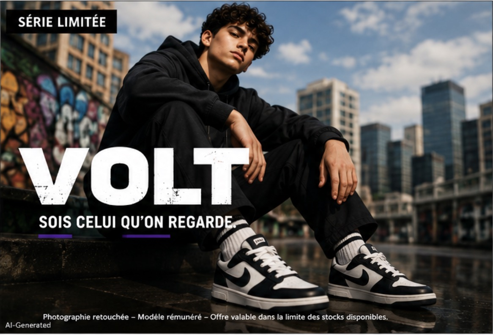

Fiche de révision · CAP agricole — ESC
Ce que nos objets disent de nous
Consommation de masse, marques et publicité
Une marque, une paire de baskets, un téléphone : certains objets ne servent pas seulement à quelque chose, ils disent aussi quelque chose de nous. Apprenons à regarder de plus près une publicité pour rester libres face à elle.
CG1.1CCF1MG1
Avant de commencer
On analyse des publicités, pas des personnes. Aucune marque n'est ridicule, aucun goût n'est meilleur qu'un autre, et personne n'est obligé de parler de ses propres objets ou de sa propre famille. Ce que tu choisis de dire de toi t'appartient : rien n'est noté là-dessus.
Elle vend une imageUne publicité ne décrit presque jamais le produit. Elle vend ce que tu auras l'air d'être en le portant : un rêve, pas une information.
Le partenariat se signaleUne recommandation rémunérée doit être annoncée. C'est la loi depuis 2023, et l'oubli est puni. Une reco qui semble libre ne l'est pas toujours.
Un stéréotype n'est pas un avisC'est un raccourci appliqué à tout un groupe. Dire « les filles aiment le rose », ce n'est pas donner son opinion, c'est effacer les personnes.
Regarder une publicité de près
Affiche fictive · spécimen

Affiche fictive — spécimen pédagogique
- La marque Au centre, en très grand. Écrite plus gros que tout le reste. Une marque est un signe déposé qui permet de reconnaître un produit ; elle ne garantit ni la qualité ni l'origine.
- La promesse, ou le rêve vendu Sous la marque. « Sois celui qu'on regarde ». On ne te promet pas une chaussure confortable : on te promet un regard des autres. Réussite, beauté, liberté, appartenance à un groupe : les quatre rêves les plus vendus.
- La rareté organisée En haut à gauche. « Série limitée », « derniers jours ». Elle crée de l'urgence et un sentiment d'exclusivité. Elle est décidée par l'entreprise, pas subie.
- La cible Nulle part et partout. Jamais écrite, mais lisible dans les codes : le vocabulaire, les couleurs, la musique, l'âge du modèle, le réseau où la pub circule. À qui parle-t-on ici ?
- Les mentions obligatoires Tout en bas, en corps minuscule. « Photographie retouchée », « modèle rémunéré ». Obligatoires, donc écrites le plus petit possible. Ce sont souvent les informations les plus honnêtes de l'affiche.
- Ce qui manque Introuvable sur l'affiche. Le prix, la composition, le lieu de fabrication, la durée de vie. Rien ne le signale : une publicité choisit ce qu'elle montre et ce qu'elle tait.
La bonne question à se poser : qu'est-ce que cette publicité me promet que le produit ne peut pas tenir ?
Regarde le coin inférieur gauche. Cette affiche est une image générée — elle le signale, comme la loi l'impose depuis 2023 (mention « Images virtuelles »). Le mannequin n'existe pas, la ville non plus. Le rêve vendu, lui, fonctionne quand même.
D'où vient la consommation de masse
1945-1975Les Trente Glorieuses : les revenus augmentent, les familles s'équipent, les produits sont fabriqués en grande quantité.
+4,1 % par anCroissance de la consommation par personne entre 1960 et 1974. Jamais l'équipement des foyers n'a progressé aussi vite.
Plus de produits
= plus de publicitéQuand les produits se ressemblent, il faut une image pour les distinguer. C'est là que la marque devient un marqueur social.
La grille de décryptage
À appliquer à n'importe quelle publicité
| La question | Sur l'affiche VOLT | Sur la publicité que je présente |
|---|
| Le produit Qu'est-ce qu'on vend ? | Des baskets. | |
| La cible À qui parle-t-on ? | Des jeunes, à en juger par le vocabulaire, le graphisme et le réseau où la pub circule. | |
| L'image Que voit-on ? | Le produit seul, en gros, sur fond noir. Aucun décor, aucun usage montré. | |
| Le rêve vendu Que promet-on vraiment ? | Être remarqué, être admiré. Une place dans le regard des autres. | |
| Les procédés Comment s'y prend-on ? | Rareté organisée (série limitée), marque écrite très gros, mentions légales minuscules. | |
| Ce qui manque Que ne dit-on pas ? | Le prix, la composition, le lieu de fabrication, la durée de vie. | |
| Mon avis Qu'est-ce que j'en pense ? | À construire en trois temps — voir plus bas. | |
Les cinq procédés à savoir nommer
RépétitionVoir un nom des dizaines de fois le rend familier. La familiarité n'est pas une information.
AssociationRelier le produit à une scène désirable — réussite, fête, liberté — dont il n'est pourtant pas la cause.
Rareté« Série limitée », « derniers jours » : créer l'urgence pour empêcher de réfléchir.
Prix-signal« La qualité, ça se paie. » Un prix élevé peut financer la publicité, pas la qualité.
PartenariatUne recommandation payée qui a l'air d'un conseil d'ami. Elle doit être signalée.
Sur les réseaux, ce qui est obligatoire depuis 2023
Une publication rémunérée doit porter une mention claire et visible pendant toute sa durée :
Publicité Collaboration commerciale Sponsorisé Partenariat
Une image dont le visage ou la silhouette a été modifié doit porter Images retouchées, et une image produite par intelligence artificielle Images virtuelles.
L'absence de ces mentions est punie : jusqu'à deux ans de prison et 300 000 € d'amende. Repérer leur absence, c'est repérer une publicité déguisée.
Reformuler un stéréotype
Décrire au lieu de généraliser
| Le raccourci | Ce qu'on peut dire à la place |
|---|
| « Les filles aiment le rose. » | « Cette publicité utilise du rose pour s'adresser aux filles. » |
| « Les jeunes ne pensent qu'aux marques. » | « Cette publicité mise sur la marque pour toucher un public jeune. » |
| « Les hommes s'intéressent aux voitures. » | « Le modèle et le décor de cette publicité visent un public masculin. » |
La règle est simple : on parle de la publicité, pas des gens. Le stéréotype dit « les X sont… » ; l'analyse dit « cette publicité s'adresse à… ». Le premier enferme, le second observe.
Prendre position, en trois temps
La méthode attendue à l'oral
Temps 1 · Mon idéeUne phrase, claire, qui donne ton avis. Pas de « je ne sais pas », pas de « ça dépend » tout seul.
« Je trouve que cette publicité en dit très peu sur le produit. »
Temps 2 · Mon argumentLe parce que. C'est là qu'on réutilise le vocabulaire de la grille : cible, rêve vendu, procédé.
« …parce qu'elle vend un rêve — être remarqué — au lieu de donner une information. »
Temps 3 · Mon exempleUn détail précis, tiré de l'affiche. C'est ce qui prouve que tu as vraiment regardé.
« Le prix et la composition n'apparaissent nulle part, alors que le slogan occupe la moitié de l'affiche. »
Trois temps, trois phrases : idée → argument → exemple. C'est ce qui distingue un avis d'une impression. Un avis nuancé compte autant qu'un avis tranché, à condition d'être argumenté : « cette publicité est efficace, mais elle ne m'apprend rien » est une bonne prise de position.
Et dans le métier ?Une entreprise du paysage se vend aussi par une image : photos de chantiers terminés, avis en ligne, page sur les réseaux. Les mêmes procédés y sont à l'œuvre — on montre le jardin fini sous le soleil, jamais le terrassement sous la pluie. Savoir décrypter une publicité, c'est aussi savoir en construire une honnête : montrer le travail réel, dater les photos, et signaler ce qui est un partenariat.
Le vocabulaire
- Consommation de masse — une grande partie de la population achète des biens produits en grande quantité.
- Marqueur social — signe visible (objet, marque, vêtement, loisir) qui donne aux autres une image de nous.
- Marque — signe déposé permettant de reconnaître un produit. Elle ne garantit ni qualité ni origine.
- Cible — le groupe de personnes qu'une publicité cherche à toucher.
- Rêve vendu — la promesse implicite : réussite, beauté, liberté, appartenance.
- Stéréotype — idée toute faite appliquée à tout un groupe comme si toutes les personnes étaient pareilles.
- Collaboration commerciale — recommandation rémunérée, dont la mention est obligatoire.
- Consommateur éclairé — personne qui se renseigne et repère les procédés pour choisir librement.
- Prise de position — un avis construit en trois temps : idée, argument, exemple.